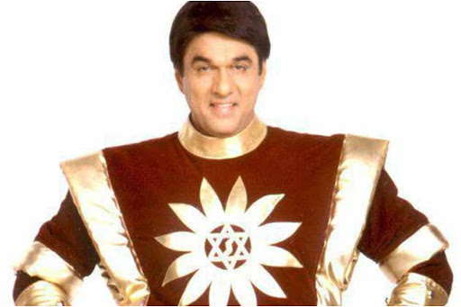

An alien named Kal-El from the destroyed planet Krypton. He was sent to Earth and raised as Clark Kent by human foster parents, Martha and Jonathan Kent. As an adult, Superman became the protector of Earth, working at the Daily Planet as Clark Kent alongside his partner and wife Lois Lane.
In the original Siegel and Shuster stories, Superman's personality is rough and aggressive. He was seen stepping in to stop wife beaters, profiteers, a lynch mob and gangsters, with rather rough edges and a looser moral code than we may be used to today. In later adventures, he became, softer, and had more of a sense of idealism and moral code of conduct. Although not as cold-blooded as the early Batman, the Superman featured in the comics of the 1930s is unconcerned about the harm his strength may cause, tossing villainous characters in such a manner that fatalities would presumably occur, although these were seldom shown explicitly on the page. This came to an end when Superman vowed never to take a life.
Superman possesses the ability to fly under his own power, incredible strength and near invulnerability, as he can only be harmed by the element Kryptonite. His eyes can emit bursts of heat, while vision ranges from the microscopic to the telescopic. His vision is also capable of a broader spectrum than human eyes, able to see x-rays and radio waves. He can hear faint sounds amongst a bustle of noises by concentrating. His lungs are capable of holding air for long periods of time in environments without oxygen, and the ability to compress this air and exhale it in a freezing capacity.
